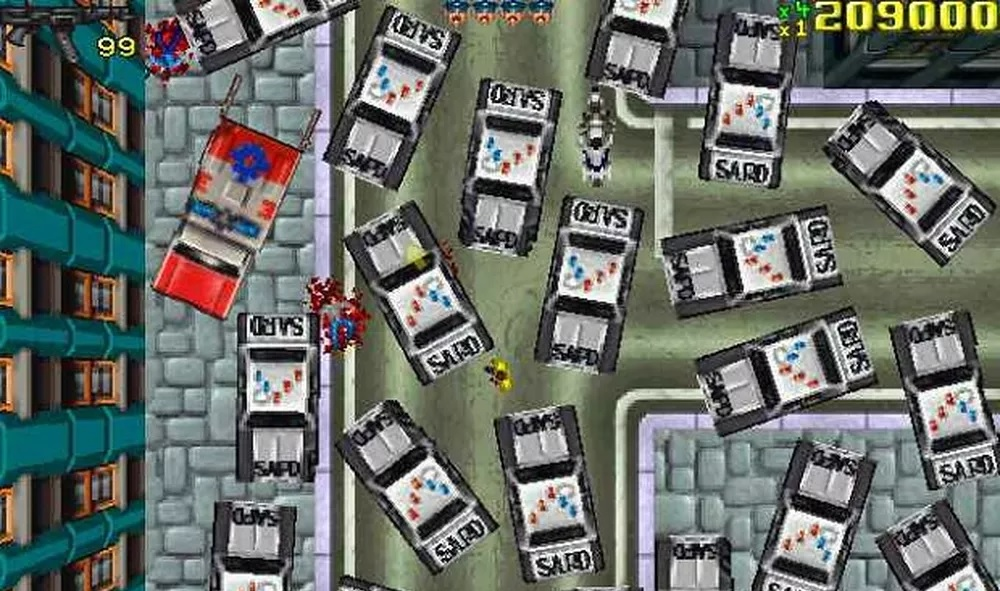

Curiosidades sobre o Jogo GTA
|
|
|
|
11 curiosidades sobre GTA
- Primeiro GTA era para ser sobre policial. ...
- Bug deu origem ao sistema de “Procurado” ...
- GTA 2 é o único que se passa em uma cidade fictícia. ...
- GTA 5 não foi o primeiro a ter vários protagonistas. ...
- Ator de Franklin foi sua própria inspiração para o personagem. ...
- GTA 4 teve influência em filme russo de máfia.
1. Primeiro GTA era para ser sobre policial

Muitas pessoas só conhecem GTA pelos títulos mais populares, ou seja, os últimos lançados, principalmente o
GTA V, porém como toda franquia eles tiveram que começar por algum lugar. O primeiro GTA foi lançado em
outubro de 1997 para computadores com Windows e MS-DOS, e pouco depois para PlayStation e Game Boy Color.
Já no primeiro jogo da série, o jogador controlava um criminoso que precisava realizar missões pelas cidades
de San Andreas, Liberty City e Vice City. A câmera era um tanto diferente, com uma visão panorâmica de cima
para baixo, e já era possível roubar carros para dirigir livremente pelo mapa e interagir com os elementos.
Esse foi um grande destaque para o jogo na época, já que pouquíssimos títulos ofereciam essa liberdade toda.
Mas o que muita gente não sabe é que originalmente o script do jogo era para que o personagem principal
fosse na verdade um policial fazendo missões para pegar criminosos. Porém, durante o desenvolvimento, eles
acabaram percebendo que seria mais divertido se fosse o contrário.
2. Bug deu origem ao sistema de “Procurado”

Qualquer pessoa que joga GTA já teve sua cabeça a prêmio pela polícia e participou de algum tipo de
perseguição. Faz parte da vida de um criminoso, certo? Quando isso acontece, as viaturas não apenas cercam o
jogador ou tentam atirar, mas também jogam o carro em direção ao carro do personagem para tentar pará-lo.
Esse tipo de perseguição mais “violenta” na verdade surgiu a partir de um bug no primeiro jogo.
Inicialmente a ideia era para ser apenas uma corrida mesmo, mas quando o jogador saia de um carro para
roubar outro no meio da perseguição, o bug fazia com que as viaturas de policia dirigissem pra cima dele e
do carro, empurrando-o para fora da estrada. Eles acabaram achando essa pegada um pouco mais agressiva da
policia interessante.
3. GTA 2 é o único que se passa em uma cidade fictícia

Talvez nem todo mundo saiba, mas as cidades da franquia de GTA são todas inspiradas em cidades reais. Dessa
forma, Liberty City é uma paródia de Nova Iorque, enquanto Vice City é Miami e Los Santos é Los Angeles.
Inclusive, o nível de semelhança principalmente em GTA V entre Los Santos e Los Angeles é incrível porque a
equipe de criação do jogo realmente viajou para lá e tiraram mais de 250 mil fotos e gravações da cidade
real e seus lugares mais icônicos. Além disso, eles também contavam com a ajuda do Google Maps.
Porém, há uma exceção, que é no GTA 2. O jogo se passa em Anywhere City, que é a única cidade da franquia
que é totalmente fictícia e não é inspirada em nenhum lugar real. E eles deixaram isso tão óbvio que o nome
da cidade significa, literalmente, “Cidade em Qualquer Lugar”. Isso acontece principalmente porque ele se
passa no “futuro”. Isso porque o jogo foi lançado em 1999 e se passava em 2013.